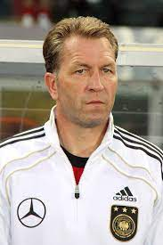
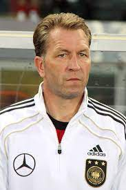

آندریاس کوپکه
آندریاس کوپکه (به آلمانی: Andreas Köpke) (متولد ۱۲ مارس ۱۹۶۲ در کیل) دروازهبان ملیپوش سابق فوتبال اهل آلمان میباشد. او از سال ۲۰۰۴ تا به اکنون بهعنوان مربی دروازهبانان در تیم ملی فوتبال آلمان مشغول به کار میباشد. کوپکه فوتبال حرفهای خود را از تیم هولشتاین کیل آغاز کرد و در سال ۲۰۰۱ در تیم نورنبرگ بازنشسته شد. او به همراه تیم ملی آلمان موفق به کسب مقام قهرمانی در جام جهانی ۱۹۹۰ و جام ملتهای اروپا ۱۹۹۶ شد. وی در سال ۱۹۹۶ توسط فدراسیون بینالمللی تاریخ و آمار فوتبال بهعنوان بهترین دروازهبان دنیا انتخاب شد. کوپکه در ۵۹ بازی ملی در ترکیب تیم ملی فوتبال آلمان حضور داشتهاست